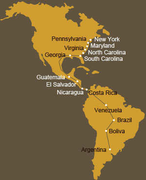

 Sandersville, Georgia, USA: 5th January 2004
Sandersville, Georgia, USA: 5th January 2004
 Miss M told me that some people get confused by these TATA diary entries because they are not always sure whether it is man or horse speaking so to avoid any of that I’ll start by introducing myself straight away…
Miss M told me that some people get confused by these TATA diary entries because they are not always sure whether it is man or horse speaking so to avoid any of that I’ll start by introducing myself straight away…
My name is Toto and I am a Tennessee Walking horse from Albany in Kentucky, USA and I have been traveling with Miss M and a couple of other horses for the past couple of weeks through the State of Georgia.
But let me backtrack and explain a bit.
Miss M ended up not going through Mexico with her two Latin American horses, Mise and Tu Fein as originally planned. They actually went into Mexico across the border from Guatemala, where they were kindly helped by Susy and Sergio Herrera but due to a number of factors, which Miss M will disclose at a later stage, the decision was eventually made to return to Guatemala.
 The only upside to this delay was that Miss M’s mom, Rea from South Africa, came to visit her during this time and both of them were delighted to see each other again after 22 months. They explored Mexico City and went to see some traditional Folklore music and dancing in a beautiful theatre in the heart of the city. Then it was down to Cuarnavaca where they were welcomed with open arms by Ana Rosa and her son Carlos and both Miss M and her mom were amazed at the interesting house and lovely gardens where they stayed. The general manager from Posada de la
The only upside to this delay was that Miss M’s mom, Rea from South Africa, came to visit her during this time and both of them were delighted to see each other again after 22 months. They explored Mexico City and went to see some traditional Folklore music and dancing in a beautiful theatre in the heart of the city. Then it was down to Cuarnavaca where they were welcomed with open arms by Ana Rosa and her son Carlos and both Miss M and her mom were amazed at the interesting house and lovely gardens where they stayed. The general manager from Posada de la Mision in Taxco (a bit further down south) had invited them to stay in his hotel for five days and Miss M told us about the lovely views from their room overlooking the hills which were dotted by little houses and covered in a sea of light in the evenings. Oaxaca (pronounced Uagaka) was another relaxing two days with beautiful cathedrals and lively little outdoor café’s to visit and the final destination was an 11 hour bus journey to Puerto Escondido, a laidback surfers’ town on the Pacific Ocean with their accommodation so close to the beach that you could hear (and smell) the waves breaking on the shore.
Mision in Taxco (a bit further down south) had invited them to stay in his hotel for five days and Miss M told us about the lovely views from their room overlooking the hills which were dotted by little houses and covered in a sea of light in the evenings. Oaxaca (pronounced Uagaka) was another relaxing two days with beautiful cathedrals and lively little outdoor café’s to visit and the final destination was an 11 hour bus journey to Puerto Escondido, a laidback surfers’ town on the Pacific Ocean with their accommodation so close to the beach that you could hear (and smell) the waves breaking on the shore.
 Once Miss M was back in Guatemala, she had to arrange a lot of things and one of them was trying to get Mise into the US to continue the TATA journey. (I think it is only appropriate if I let Mise talk about Tu Fein at a later stage). Unfortunately due to a lack of space at the quarantine facility in Miami, Florida until February 04, Miss M had to start thinking about Plan B (i.e. go over now and get Mise to join her later, courtesy of DHL). She purchased me from a man called Jerry Adams in Kentucky and our starting point was down south in Dothan in the State of Alabama. With me was Pepsi (3 years), also a Tennessee Walker.
Once Miss M was back in Guatemala, she had to arrange a lot of things and one of them was trying to get Mise into the US to continue the TATA journey. (I think it is only appropriate if I let Mise talk about Tu Fein at a later stage). Unfortunately due to a lack of space at the quarantine facility in Miami, Florida until February 04, Miss M had to start thinking about Plan B (i.e. go over now and get Mise to join her later, courtesy of DHL). She purchased me from a man called Jerry Adams in Kentucky and our starting point was down south in Dothan in the State of Alabama. With me was Pepsi (3 years), also a Tennessee Walker.
 Our first real experience of Southern hospitality started when we entered the small town of Colquitt and where we got to meet Mr. Terry Toole, the Editor of the Miller County Liberal Newspaper, his wife, Mrs. Betty Jo (the woman behind the successful-man-kind of-thing!) and their daughter Tammy.
Our first real experience of Southern hospitality started when we entered the small town of Colquitt and where we got to meet Mr. Terry Toole, the Editor of the Miller County Liberal Newspaper, his wife, Mrs. Betty Jo (the woman behind the successful-man-kind of-thing!) and their daughter Tammy.
 Well, Mr. Toole might have thought this is only an ideal opportunity for an interesting newspaper article but before he knew it we were lodged on the property of his 90 year-old mother-in-law and Miss M had a room with them in the house! All I can say is that we had a delightful stay and it was with difficulty that Miss M managed to drag herself and us away from this lovely family to continue our trotting. Mr. Toole wrote a very special article (with a personal touch) about Miss M and our few days in Colquitt - here to read it.
Well, Mr. Toole might have thought this is only an ideal opportunity for an interesting newspaper article but before he knew it we were lodged on the property of his 90 year-old mother-in-law and Miss M had a room with them in the house! All I can say is that we had a delightful stay and it was with difficulty that Miss M managed to drag herself and us away from this lovely family to continue our trotting. Mr. Toole wrote a very special article (with a personal touch) about Miss M and our few days in Colquitt - here to read it.
And before I forget…many thanks too to Ronald and Jeanine Kirkland who crossed our path just at the right time and for all their assistance in Baker County.
 Camilla was next on the map after Colquitt and with some stroke of luck Miss M found a nice place with the ever-enthusiastic Lacy Shiver and her daughter Carly who provided us with a big fenced-in spot and lovely food for the evening. Lacy also managed to get Channel 10 out the following day and they caught up with us on the road for a quick interview....always a good opportunity too to rest the legs.
Camilla was next on the map after Colquitt and with some stroke of luck Miss M found a nice place with the ever-enthusiastic Lacy Shiver and her daughter Carly who provided us with a big fenced-in spot and lovely food for the evening. Lacy also managed to get Channel 10 out the following day and they caught up with us on the road for a quick interview....always a good opportunity too to rest the legs. We were very glad the next day when on our way to Sylvester, we were approached by a very friendly woman called Marilyn Magelund who was so interested in the three of us on the side of the road, that she couldn’t help but stop and offer us her help. In jig time she had organized a place for Miss M and us at their good friends place, Diane and Joel Johnson across the road… a lovely haven with big open spaces and beautiful stables. Diane is an accomplished
We were very glad the next day when on our way to Sylvester, we were approached by a very friendly woman called Marilyn Magelund who was so interested in the three of us on the side of the road, that she couldn’t help but stop and offer us her help. In jig time she had organized a place for Miss M and us at their good friends place, Diane and Joel Johnson across the road… a lovely haven with big open spaces and beautiful stables. Diane is an accomplished  artist and does beautiful watercolor paintings of horses, cats and dogs…you name it. These paintings are truly so life-like and it feels as if the little doggie in the picture can jump into your arms at any moment! Anybody that is interested in having a memorable painting of a beloved pet done can contact Diane at studiodj@flash.net Oh yes, Miss M also told us about the spin in Diane’s flashy Corvette and I am sure the temptation was just huge to trade this 400 horse-power for you know who!
artist and does beautiful watercolor paintings of horses, cats and dogs…you name it. These paintings are truly so life-like and it feels as if the little doggie in the picture can jump into your arms at any moment! Anybody that is interested in having a memorable painting of a beloved pet done can contact Diane at studiodj@flash.net Oh yes, Miss M also told us about the spin in Diane’s flashy Corvette and I am sure the temptation was just huge to trade this 400 horse-power for you know who!
Miss M received a lot of help from Marilyn who even took time off work the next day to assist her with bits and pieces. They went into the city of Albany to get this all done. In record time they had managed to get sponsorship from Alltell, and with the friendly and rapid assistance of Joe Pierce, the manager in Albany, Miss M was given a phone and a great service until the end of her journey. Their generosity was extended further when she received a good discount on new reins and in another tack-shop, the owner even gave her some product for free.
From Lester we trotted on towards Sylvester and on the way we got to meet Bobby Littleton who offered us a couple of bags of good sweet feed. We ended up having quite a lot of contact with Bobby and his wife Theresa and family and they really helped us all a lot. We just continue to be totally amazed by all the wonderful generosity and unconditional help on our way.
In Ashburn, we received great hospitality from Ginger, Greg, Matt and Brittany Brown and it is also here that Miss M started to realize that Pepsi’s days with us were numbered. Since we left Colquitt, Miss M started to have doubts  about Pepsi’s ability to do this journey…. he is very young you see and quite inexperienced and still jumps at everything which means that none of us can ever completely relax. Also, if he is on the leading rope he is either hyper, trying to run to the front and then block me off or otherwise he simply pulls on the rope, leaving me to do the hard work and actually drag him along. Well, the whole Brown and Littleton family were witnesses to Pepsi’s behavior the day we left Ashburn/Dakota and there was no doubt that there needed to be a change soon. In miracle time Bobby was in contact with a good friend of his who had a few days earlier indicated that he would be more than willing to help, should I need another horse (s) and that evening, Miss M already had the two Appaloosa’s of Todd and Maria Merritt to try out.
about Pepsi’s ability to do this journey…. he is very young you see and quite inexperienced and still jumps at everything which means that none of us can ever completely relax. Also, if he is on the leading rope he is either hyper, trying to run to the front and then block me off or otherwise he simply pulls on the rope, leaving me to do the hard work and actually drag him along. Well, the whole Brown and Littleton family were witnesses to Pepsi’s behavior the day we left Ashburn/Dakota and there was no doubt that there needed to be a change soon. In miracle time Bobby was in contact with a good friend of his who had a few days earlier indicated that he would be more than willing to help, should I need another horse (s) and that evening, Miss M already had the two Appaloosa’s of Todd and Maria Merritt to try out.
 The decision was made to ride Camanchi and Fleetwood the following day or two and then come to a final decision as to who will be part of the trio going up north towards New York. Miss M was just so happy that two people who didn’t know her from Adam, would be so trusting, handing over their beloved horses so that the TATA journey can be completed and she told us she will always remember Maria’s sincere and caring parting words…”remember, we are available for you 24/7”.
The decision was made to ride Camanchi and Fleetwood the following day or two and then come to a final decision as to who will be part of the trio going up north towards New York. Miss M was just so happy that two people who didn’t know her from Adam, would be so trusting, handing over their beloved horses so that the TATA journey can be completed and she told us she will always remember Maria’s sincere and caring parting words…”remember, we are available for you 24/7”.
With the help of Tami Manders, Miss M was put in touch with Kami Faircloth who lives in Cordele and part of the arrangement was that Miss would be staying next to us in a very comfortable living trailer with all the luxuries anybody could wish for. Kami could see that Miss M was so enthusiastic about the trailer that she kindly offered to take it up to our next destination the following day, so that Miss M could have another’s night peaceful sleep next to our stables at the racing track.
 After two days with Fleetwood and Camanchi, Miss M had come to the conclusion that it will be Camanchi and I who will be part of the TATA travelling group. Todd accompanied Miss M the following day on horseback as far as the outskirts of the city of Dublin and it made for a nice and easy ride with good company. He also thought that Camanchi and I make a great team as we have a similar pace, are equally tamed and have more or less the same temperament. I rejoined the group that day and Fleetwood was brought back to Todd and Maria’s home….probably counting the days until he is re-united with Camanchi again!
After two days with Fleetwood and Camanchi, Miss M had come to the conclusion that it will be Camanchi and I who will be part of the TATA travelling group. Todd accompanied Miss M the following day on horseback as far as the outskirts of the city of Dublin and it made for a nice and easy ride with good company. He also thought that Camanchi and I make a great team as we have a similar pace, are equally tamed and have more or less the same temperament. I rejoined the group that day and Fleetwood was brought back to Todd and Maria’s home….probably counting the days until he is re-united with Camanchi again!
 We didn’t realize that Dublin, Georgia (named after Miss M’s adopted town, Dublin in Ireland) would be so big and it took us ages to get through the city as we also had to cross a long bridge with the usual heavy traffic and a mixture of patient and impatient drivers, rushing passed us at different speeds.
We didn’t realize that Dublin, Georgia (named after Miss M’s adopted town, Dublin in Ireland) would be so big and it took us ages to get through the city as we also had to cross a long bridge with the usual heavy traffic and a mixture of patient and impatient drivers, rushing passed us at different speeds. It was also in Dublin that two guys approached us from the National Guards called Justin Clements and Danny Holland and they advised Miss M on the best route to take, going towards Sandersville. Justin also helped Miss M with that night’s accommodation on Christmas Eve, which he organized at the house of Sam and Sarah Yoder who with their five children (Miss M didn’t get to meet the other seven) were extremely hospitable and didn’t hesitate to offer a helping hand. Justin invited Miss M to spend some time that evening with his wife and family and he did all he could to make Miss M feel at home.
It was also in Dublin that two guys approached us from the National Guards called Justin Clements and Danny Holland and they advised Miss M on the best route to take, going towards Sandersville. Justin also helped Miss M with that night’s accommodation on Christmas Eve, which he organized at the house of Sam and Sarah Yoder who with their five children (Miss M didn’t get to meet the other seven) were extremely hospitable and didn’t hesitate to offer a helping hand. Justin invited Miss M to spend some time that evening with his wife and family and he did all he could to make Miss M feel at home.

Christmas day was surely not a resting day for us (well at least not initially) and we started our trotting around 10am that morning despite the chilly air. But our ride turned out to be a short one when around 2pm we got “rescued” by Danny, Tish (read about her extraordinary story in our next diary entry) and Angelica Holland who persuaded Miss M to get out of the cold and to spend Xmas day at their house. They also generously offered to take care of us for the next week, as they knew that Miss M was going to be away for a while and needed a safe place for her equine pals.
 Camanchi and I had a very relaxing stay at the Holland House and was thoroughly looked after…the family treated us just like we were their own pets (who have the best life ever just by the way!) and we couldn’t have asked for better care-takers. On Miss M’s return, Danny told her that Camanchi had been slobbering a bit whilst eating and he thought that his teeth needed to be floated (a filing process to get rid of the sharp edges that makes it very painful for especially older horses to eat). So off we went to a place in Fort Valley, called
Camanchi and I had a very relaxing stay at the Holland House and was thoroughly looked after…the family treated us just like we were their own pets (who have the best life ever just by the way!) and we couldn’t have asked for better care-takers. On Miss M’s return, Danny told her that Camanchi had been slobbering a bit whilst eating and he thought that his teeth needed to be floated (a filing process to get rid of the sharp edges that makes it very painful for especially older horses to eat). So off we went to a place in Fort Valley, called  Central Georgia Equine Services (.equineservices.com). Over there Dr. Jennifer Miller did a great job with Camanchi’s teeth (I didn’t need any work done on mine) and they were even so kind to charge Miss M only a minimal fee for the tranquilizer and nothing else, showing their support for the cause of our TATA travels. We were all very impressed with the friendly staff and neat and professional set-up at Equine Services and would recommend it to anybody who needs the best possible treatment and care for their horses.
Central Georgia Equine Services (.equineservices.com). Over there Dr. Jennifer Miller did a great job with Camanchi’s teeth (I didn’t need any work done on mine) and they were even so kind to charge Miss M only a minimal fee for the tranquilizer and nothing else, showing their support for the cause of our TATA travels. We were all very impressed with the friendly staff and neat and professional set-up at Equine Services and would recommend it to anybody who needs the best possible treatment and care for their horses.
Another wonderful product we’ve been using for a while now from a sponsor in Dundalk, Ireland is called Herbalwise (www.herbalwise.ie). These supplement tonics with ingredients such as Cod Liver Oil, Honey, Kelp and much more are great for man and horse (don’t sip from the same bottle though!) and for those who are interested to know more, feel free to send an e-mail to hw@esatclear.ie.
Well, sadly it is time tomorrow to say goodbye to our friends, the Holland-family who had been very good to all of us and from here it is probably about 4 or 5 days until we will cross into South Carolina. We are all excited as to what lies ahead (hopefully we will be able to cope with the cold weather) and if things continue the way they have been so far in the US, we will have absolutely no reason to complain!!
And before I sign off…a heartfelt thanks to all those people on the way through Georgia who had been so generous with their donations…please know that it is very much appreciated and every dollar we receive brings us closer to our aim. And for anybody else in the US who wishes to make a donation, there is now a TATA account within the States. The details are: Tata Challenge, Bank of Camilla, P.O. Box 111, Camilla, GA 31730-0111
So long friends…until next time.